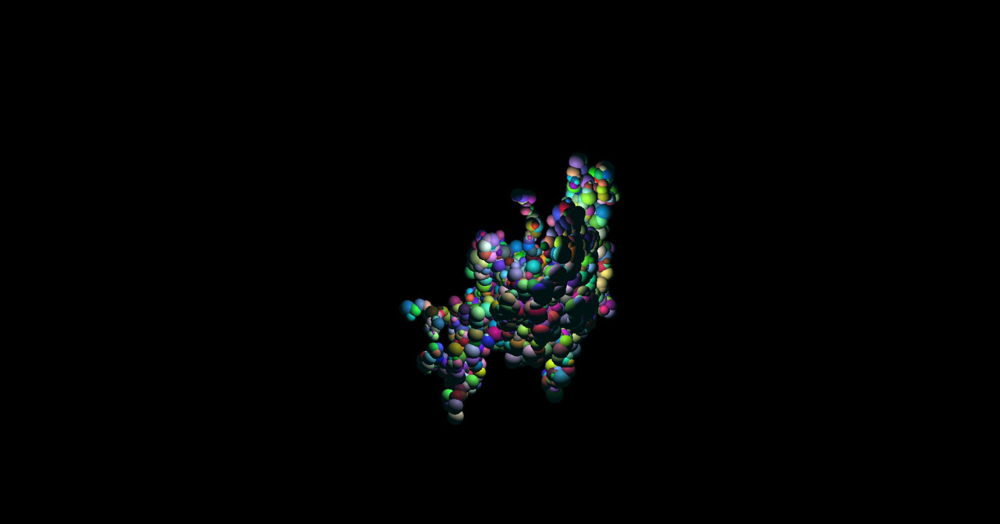
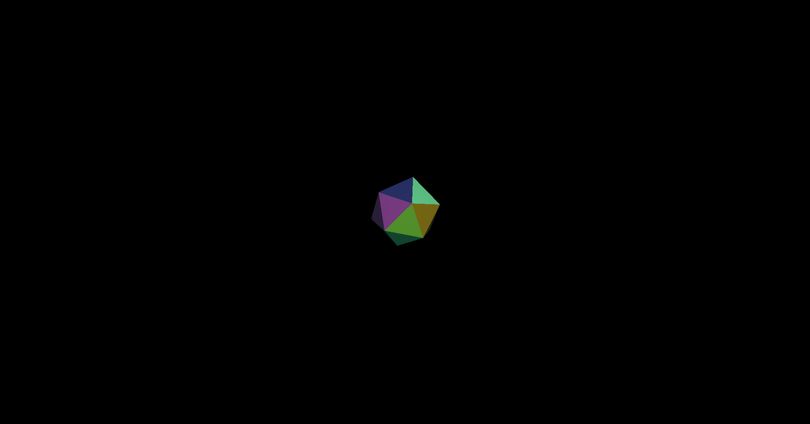
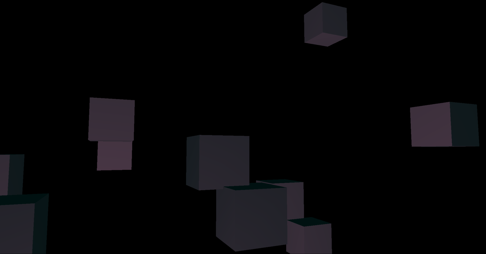
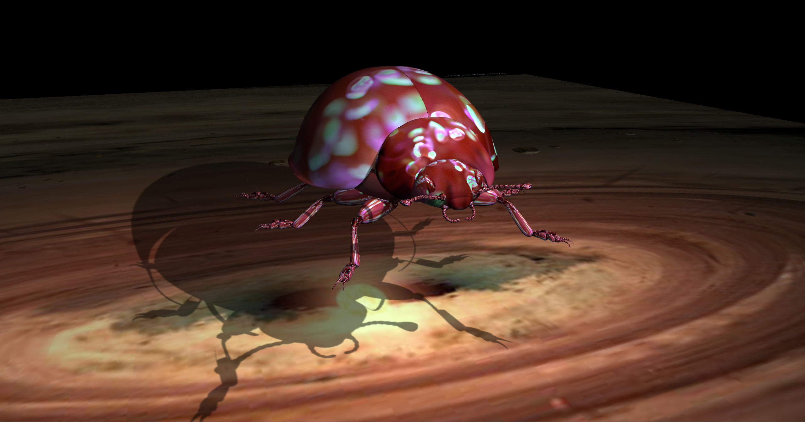
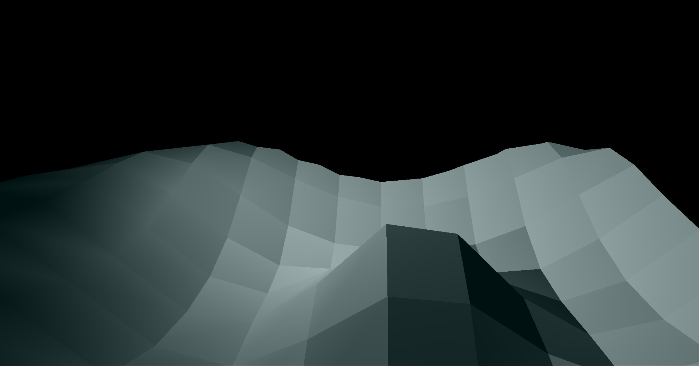
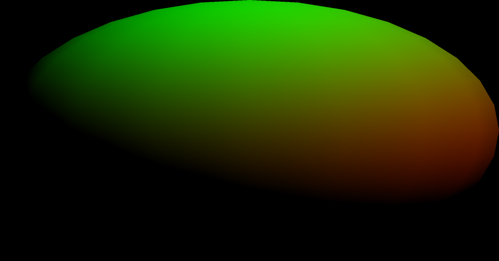
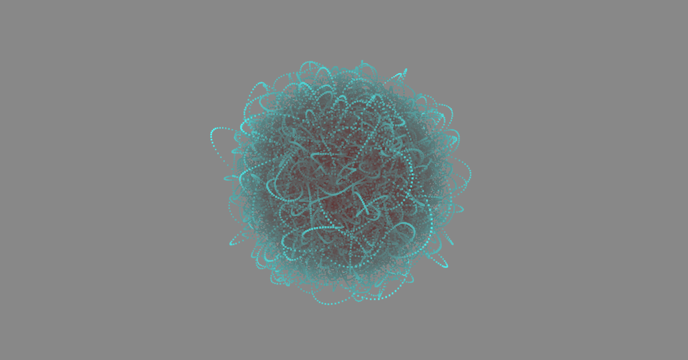
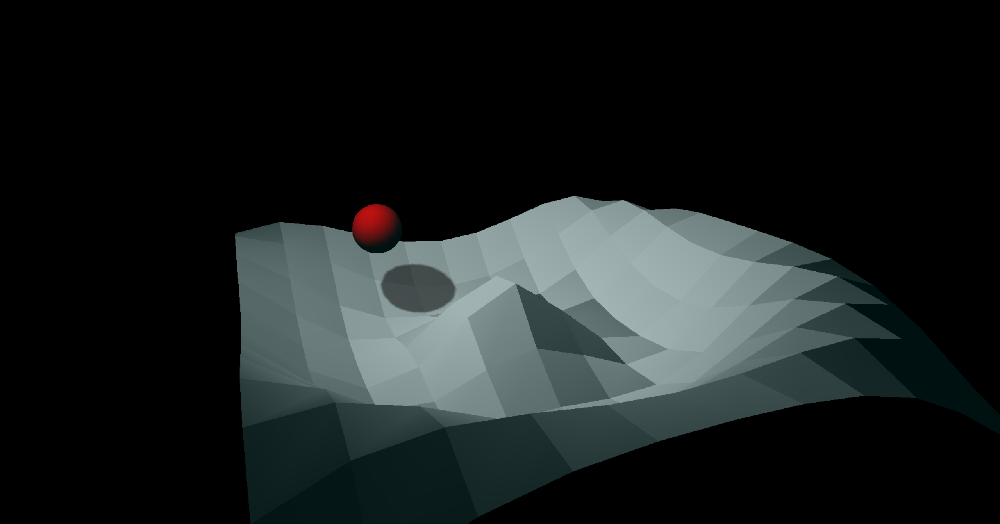

-  Getting to know the Scenegraph
-  Making the faces of an icosohedron pickable
- Applying a Programmable Canvas Element as a Texture
-  Sending the Camera along an Interpolated Path
-  Understanding Quaternions: Navigating the Quaternion Beetle
-  Terrain Generation: Undulating Landscape
-  What is a Shader?
 Working with Textures in a Shader: Height Map of Crater Lake
Working with Textures in a Shader: Height Map of Crater Lake Exploring the Particle Forest
Exploring the Particle Forest-  Particle Behavior: Emergent Spinning Malevolent Ball of Yarn
 Particle Attributes: Size, Texture and Opacity
Particle Attributes: Size, Texture and Opacity-  Collision Detection: Red Ball in Undulating Landscape